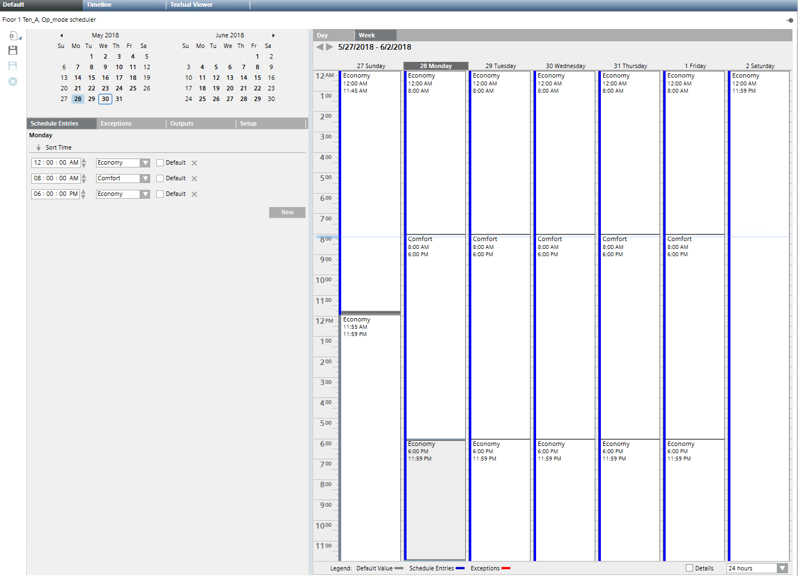
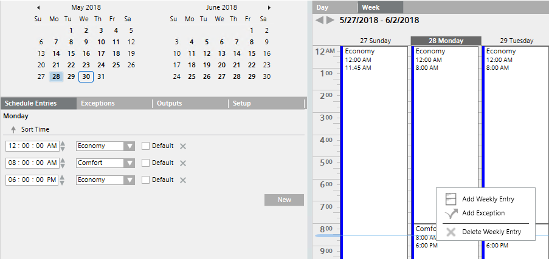
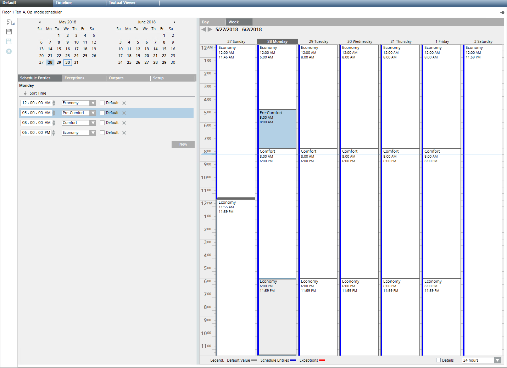
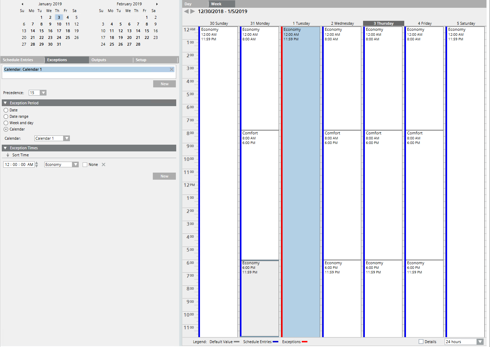
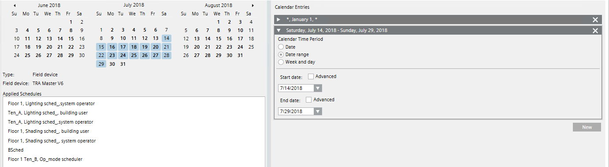
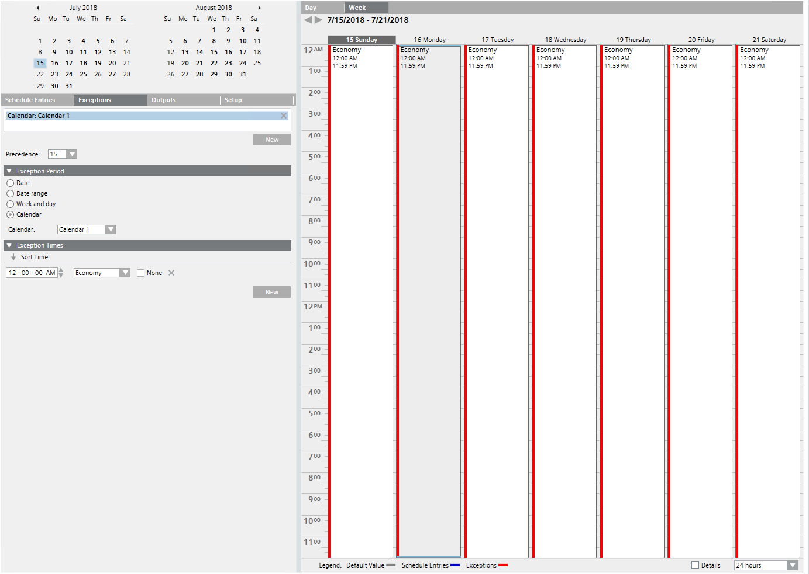
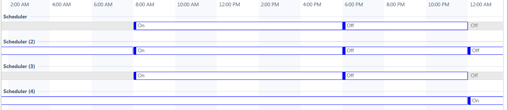

Modifying Scheduler and Calendar Entries
The workflows below let you add a new operation mode in a scheduler and create a new exception date.
Modifying Scheduler Times
Scenario: On Monday morning, room temperatures are too low. You want to add a period with Pre-Comfort operating mode.

- In System Browser, select the desired scheduler type:
- Analog Scheduler
- Binary Scheduler
- Multistate Scheduler
- Scheduler - Click the desired scheduler.
- The scheduler information displays.
- Select the Week tab.
- Select the desired day (for example, Monday).
- Right-click the empty space of the schedule entry that you want to change.
- On the menu that displays, select Add Weekly Entry.

- Select the Schedule Entries tab.
- Do the following:
a. Select the highlighted row.
b. Clear the Default check box.
c. In the Exceptions drop-down list, change the entry from Economy to Pre-Comfort.
d. For Pre-Comfort operating mode, define the start time (for example, 5.00 AM). - Click Save
 .
.
- The changed times are written to the automation station.

Modifying Calendar Dates
Scenario: Your calendar 1 is already set to exception status (here: operating mode Economy) for January 1. You want to re-use this exception status for the vacation time in July.

- In System Browser, select Calendar.
- Click Calendar 1.
- The calendar 1 information displays.
- In the Calendar Entries section, click New.
- A new Exception Times expander opens.
- Do the following:
a. Select the option Data range.
b. Clear the Start date check box Advanced.
c. In the drop-down list, select the start date of the vacation period.
d. Clear the End date check box Advanced.
e. In the drop-down list, select the end date of the vacation period.
- The vacation range displays in blue color.
- Click Save .
- To finalize the scheduler entries, do the following:
a. In System Browser, select the scheduler with the assigned calendar.
b. Select the Exception tab.
c. In the Exception Period expander, select the option Calendar.
d. In the Calendar drop-down list, select Calendar 1.
e. In the Exception Times expander, check the assigned operating mode (the check box None must be cleared).
f. Click Save.
- The scheduler is in Economy operating mode during the vacation period (red lines displayed as exception).


NOTE:
For next year’s vacation period you can re-use this exception and adjust the dates.
Comparing Time Settings of Multiple Schedulers
Scenario: You want to compare the time settings of multiple schedulers.

- In System Browser, select the first scheduler.
- Click the desired scheduler.
- The scheduler information displays.
- Select the Timeline tab.
- The time settings display as a row.
- Press and hold the CTRL key and select all schedulers that you want to compare.